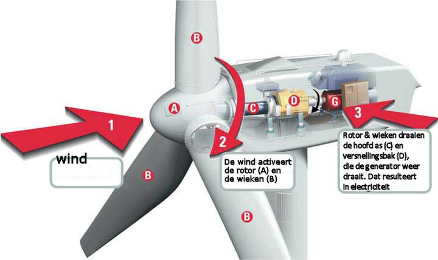

Excursion
Nadat we alle als klas alles geleerd hadden tijdens de workshops en lectures was het in week 6 tijd voor de excursie.
Als excursie bezochten we als klas het futuristische museum NEMO. Daar keken we met een verse blik op allerlei tentoonstellingen.
We hadden in de voorgaande weken namelijk veel geleerd.
Het doel van de excursie was om 1 instalatie uit te kiezen die we het meest interessant vonden op technologisch niveau, daar vervolgens een selfie van te maken om er vervolgens wat meer over te vertellen.
Selfie

De installatie
Op de selfie is het misschien lastig te zien, maar het doel van deze installatie was het opvangen van wind.
De installatie bestaat uit een aantal ventilatoren die om en om een kleine hoeveelheid
wind creëren.
Er staan vervolgens andere apparaten waarmee je die wind op kunt vangen, waardoor je energie opwekt. Het doel van de installatie is om te laten zien hoe windmolens elektriciteit
kunnen genereren.
Deze installatie maakt dan ook deel uit van de tentoonstelling: "Energierijk".
Het doel van deze tentoonstelling is om te laten zien hoe je energie kunt opwekken door gebruik te
maken van wind, water en licht. Hoe beter je je best deed in het opvangen van wind, water en licht, hoe sneller je apparaat ging bewegen.
In het geval van mijn installatie ging het dus om het opvangen
van wind met een windmolen. Die windmolen ging steeds sneller draaien naarmate ik meer wind opving.
Op spelenderwijze leren bezoekers van het NEMO museum dus hoe je groene energie op kunt wekken.
Naast de installaties zelf is er ook nog achtergrondinformatie aanwezig bij de tentoonstelling.
Daarin wordt uitgelegd dat deze nieuwe energiebronnen beter zijn voor het milieu ten opzichte van fossiele brandstoffen.
Dat is anno 2019 natuurlijk relevant, en ik vind het dan ook een goede zaak dat NEMO hier aandacht aan heeft besteed.
Naast het feit dat het een maatschappelijk verantwoorde keuze is om deze tentoonstelling tentoon te stellen vind ik windmolens
gewoon fascinerende technologie die wij als Nederlanders al eeuwenlang op succesvolle wijze hanteren.
Deze kleine windmolentjes die ze bij NEMO hadden waren uitgerust met een hoop kleinere rotorbladen (wieken).
Bij grote windmolens worden er echter vaak maar 3 rotorbladen gebruikt.
Je bereikt namelijk een punt waarop het toevoegen van meer bladen meer geld kost dan het oplevert.
Bij de tentoonstelling van de NEMO moet de wind echter van ver komen, en is de wind niet bepaald sterk.
Het is dan dus ook een logische keuze om hier te kiezen voor meer en kleinere wieken.
Nadat de wind opgevangen wordt door de bladen gaat de rotor waaraan de bladen vastzitten draaien.
Die rotor is vervolgens verbonden aan een generator, die de kinetische energie van het draaien omzet in elektriciteit.
Die elektriciteit wordt vervolgens omgezet naar hoogspanning. Als elektriciteit namelijk grote afstanden moet afleggen dan verliest het veel energie.
Bij hoogspanning is dit verlies veel minder. Als het dan op de plaats van bestemming aankomt wordt het weer teruggezet naar laagspanning.
Dat is noodzakelijk omdat het gemiddelde huishouden anders de hoeveelheid stroom niet aankan.
Vervolgens stroomt de elektriciteit via kabels de Nederlandse huishoudens is en is de cirkel van energie compleet.
Er zijn momenteel al ruimtes vastgelegd door de overheid waar enorme windparken in de toekomst gebouwd mogen worden.
In de toekomst zal een hoop van onze elektriciteit dus uit deze parken komen. Het is dan ook leuk om te zien hoe het nou allemaal precies werkt.
En voor de mensen die denken dat windenergie duur is, is er ook goed nieuws.
Er worden namelijk al windmolenparken aangelegd zonder subsidie.
